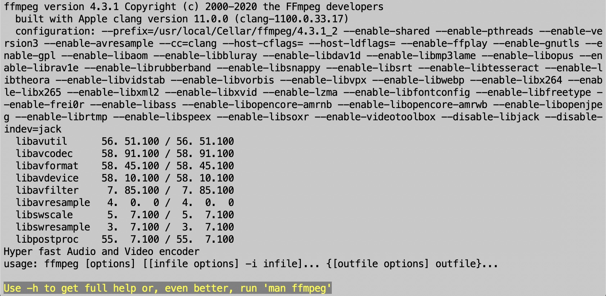

Table of contents
Video Processing with FFmpeg
🚧 This page is currently under construction 🚧
This technical guide was created as part of the archiving workflow for PARADISEC. Some of the content may not be relevant for general users.
Last updated: 15 September 2021
FFmpeg is an efficient and cost effective way to process video. It is done by using a command line interface (CLI), but once the workflow is set up, it is relatively simple.
Using FFmpeg on a Mac
Installation
If you are using a Mac, it is a bit more straight forward than the PC as Bash is a Unix shell (command language interpreter) and runs natively on Macs. To download FFmpeg, open a terminal window and first install Homebrew (command line package manager) with the following commands:
1. Install Homebrew
/bin/bash -c "$(curl -fsSL https://raw.githubusercontent.com/Homebrew/install/master/install.sh)"
NOTE: Check here for any updates to the Homebrew installation process: https://brew.sh/
2. Run Brew Doctor. This is a self-diagnostic tool to determine if everything is installed correctly.
brew doctor
3. Install FFmpeg
brew install ffmpeg
NOTE: Check here for any updates to the ffmpeg installation process: https://formulae.brew.sh/formula/ffmpeg
To test if you have installed FFmpeg correctly, just type ffmpeg and enter. Information about the version of FFmpeg as well as enabled libraries should appear in your terminal window as seen in the image below.

As suggested in that final line in the above image, to view the FFmpeg manual in the terminal window, type in:
man ffmpeg
For further help using FFmpeg, take a look at the following sites:
FFmpeg: https://ffmpeg.org/ffmpeg.html
ffmprovisor: https://amiaopensource.github.io/ffmprovisr/
Navigate via terminal to your working directory
It is a good idea to set up a working directory for your video transcoding work. To use FFmpeg for this task, you’ll first need to direct it to the folder containing the videos you wish to work with.
Here is are a few sites that can get you started with bash so that you can navigate around your directories using the terminal:
- Linux Commands - Basic Bash Command Line Tips You Should Know
- 16 Must-Know Bash Commands for Data Scientists
- An A-Z Index of the Linux command line: bash + utilities
Transcoding .MP4 to .MP4 with ffmpeg
Using FFmpeg on a PC
Not all terminals are the same; Linux (what we use for FFmpeg Bash commands) does not run natively on PCs. We could run FFmpeg on the native PC terminal, but the transcoding commands would not be the same as those we use on the Mac.
Linux on Windows
Thankfully, Windows 10 has created a full subsystem that you can activate allowing us to use Linux on the PC without needing a virtual machine or container. If you need help determining if you have the latest Windows update, try this site: https://www.howtogeek.com/301795/how-to-get-windows-10s-creators-update-now/.
Activating Linux on your PC
To get your computer set up to use Linux, go to Control Panel > Programs > Turn Windows Features On Or Off. Tick the box for “Windows Subsystem for Linux” option, and then click “OK”. Next click “Restart now” when prompted. This new feature won’t work until you reboot your machine.
Installing Ubuntu
Installing ffmpeg via Ubuntu
Navigating to your working directory
Anatomy of the ffmpeg transcode command
⬆️ Back to top